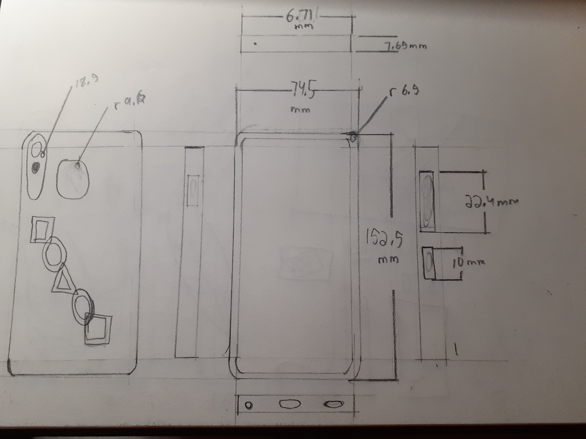
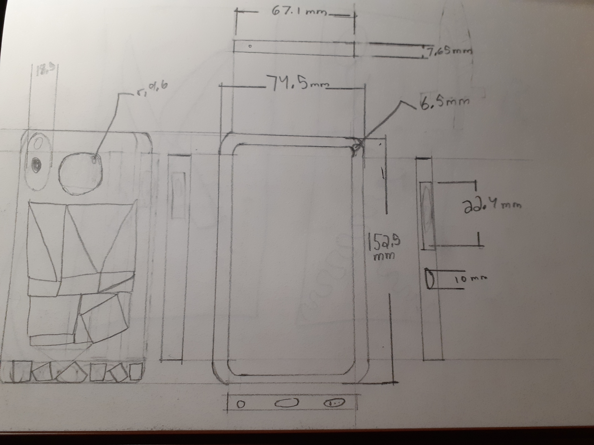
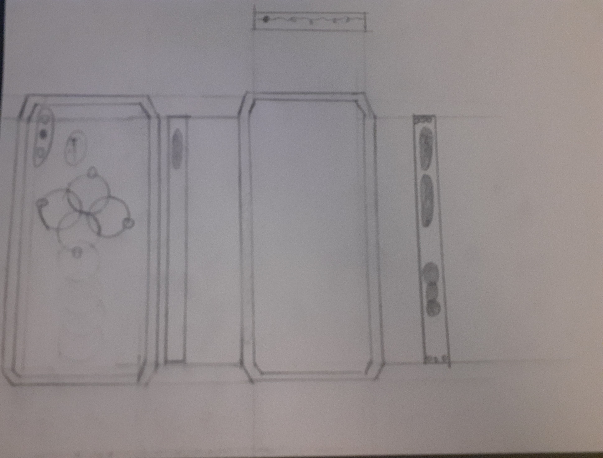
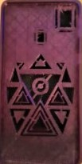

The Stackable Pyramids
In my sophomore year we had a project in which we made our own custom phone cases

 I started off by creating initial design sketches that used repetitve styles. In this sketch I took some inspiration from my earring design. I was going for a shape chain, using various types of shapes. My plan was to offset the shapes and cut it out. I didnt want to take up too much space which is why I made it pretty simple. This is also the design that I decided to go with later on. I felt that the design mimicked my earring design and linked the two projects together.
 For this sketch I went for a bigger design that would almost encompass the entire backside of the phone case. I also stuck to a patttern that used shapes, for this design I went for a pattern that mainly consisted of triangles and squares/rectangles. I also had a somewhat similar pattern at the bottom. The idea was the same, to offset and have empty space there. But I felt that the desing was too big for the case.
 I really liked the idea of using circles in a repetitve way and that was my inspiration for this sketch. I used my previous chain ideas but this time only incorporated it with a single type of shape rather than multiple different types. I had also taken inspiration from bangle braclets, something that my mom wears quite often.
_page-0001.jpg) Here you can see a titlesheet with the intial 3D model of my design. Here you can see the offsets and the shapes being cut through. I also added
the side buttons and beveled the edges to get that curve on them.
Here you can see a titlesheet with the intial 3D model of my design. Here you can see the offsets and the shapes being cut through. I also added
the side buttons and beveled the edges to get that curve on them.
.jpg) After my orginal design I realized there were a few problems with it. The project required us to remove 50% of the material of the case, a requirement I was not
meeting with my original design. The design was just too "less". So in my second iteration I changed the pattern to one that is mainly composed of triangular shapes.
I had also included a sort of focal point that being the circle in the middle.I went for a "pyramidal" and "stacking" sort of design. And to meet the 50% material cut requirement I offsetted the triangles in the design and cut through them
to create that empty space. I also added some small designs to the camera and fingerprint scanner holes, offsetting them and creating small minature boxes around them.
After my orginal design I realized there were a few problems with it. The project required us to remove 50% of the material of the case, a requirement I was not
meeting with my original design. The design was just too "less". So in my second iteration I changed the pattern to one that is mainly composed of triangular shapes.
I had also included a sort of focal point that being the circle in the middle.I went for a "pyramidal" and "stacking" sort of design. And to meet the 50% material cut requirement I offsetted the triangles in the design and cut through them
to create that empty space. I also added some small designs to the camera and fingerprint scanner holes, offsetting them and creating small minature boxes around them.
 Since school was closed for in person classes it was tough to get a physical prototype of our designs. Our teacher actually used her own printer to print out all of our designs but it was a one time thing due to the fact that the printer our teacher has is a very small one and not one used for mass printing. So we werent able to change any specifications on our design and reprint them. In the end the protoype came out fine